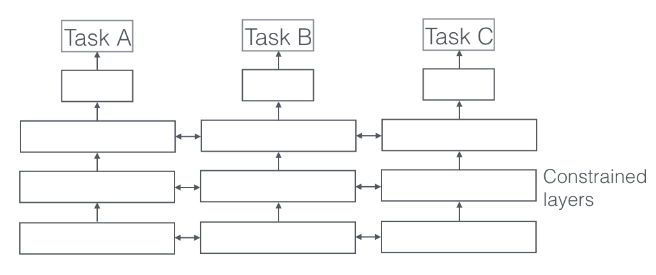

<div class="col col-6">
    <ul>
        <li>each task has its own model with its own parameters</li>
        <li>the distance between the parameters of the model is then regularized</li>
    </ul>

</div>


<div class="col col-6">
    
</div>
